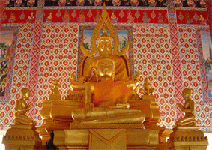

http://www.
watthasai.net
วัดเก่าแก่ซึ่งมีอายุกว่า
๓๕๙ ปี
ู
ศนย์รวมทางจิตใจชาวสุราษฎร์ฯ
แหล่งศึกษา
ทั้ง
ทางโลก
และ
ทางธรรม
ที่ตั้งสำนักงานเจ้าคณะจังหวัด
สถานที่ท่องเที่ยวทางวัฒนธรรม
ยินดีต้อนรับสู่เว็บไซต์วัดท่าไทร ซึ่งเป็นเว็บไซต์พระพุทธศาสนา มีอุดมการณ์ในการดำเนินการเพื่อประโยชน์และความุสขแก่มวลมนุษยชาติอย่างสูงสุด
ตั้งเป็นเว็บหลัก
|
สถาบันศาสนา
|
ศูนย์ข่าวศาสนา
|
ข่าวสุราษฎร์ธาน
ี
|
บทความ
|
วันสำคัญ
|
กลอนธรรมะ
|
อบรมพิมพ์ดีด&คอม
|
สมุดเยี่ยม
|
Webboard
|
ลิ้งค์เว็บทั่วไป
|
ลิ้งค์เว็บตำรวจ

พระประธานในอุโบสถวัดท่าไทร
ทำความรู้จักกับวัดท่าไทร
ผู้ดูแลระบบ/Webmaster
ประวัติวัดท่าไทร
ประเพณีของวัดท่าไทร
ฟังเพลงเข้าวัดท่าไทร
คลังยาสามัญเพื่อพยาบาลพระเณร
แผนที่ตั้ง-การเดินทางไปวัดท่าไทร
ประวัติหลวงพ่อชม
ประวัตพระกิตติมงคลพิพัฒน์(จ้อย)
ประวัติพระมหาสนอง(อดีต รก.จร.)
ประวัติเจ้าอาวาสรูปปัจจุบัน
ข้อมูลประกอบปริญญากิตติมศักดิ์
งานวิจัย : พระเทพพิพัฒนาภรณ์
จร.วัดท่าไทร : คนดีศรีกาญจนดิษฐ์
ประเพณีทอดผ้าป่าออกพรรษา
ประเพณีห่อข้าวต้มลูกโยน/แทงต้ม
"
ขนมต้ม
"ขนมแห่งศรัทธาและเอื้ออารี
ประวัติหลวงพ่อเพชร(วัดวชิรฯ)
ดาวน์โหลดเพลงขอเชิญไปวัดท่าไทร
สถิติพระ-สามเณรจำพรรษา
สัทธิวิหาริกพระเทพพิพัฒนาภรณ์
วัตถุมงคลที่วัดจัดสร้างขึ้น
รูปเหรียญหลวงพ่อชมรุ่นต่างๆ
ตำนาน ๙ พระดีศรีสุราษฎร์
เนื้อร้องของเพลงชุดวัดท่าไทร
มุมมองนักคิดและสื่อมวชนต่อวัด
มุมมองจากคนมาเที่ยววัด
สถานีวิทยุมาเกาะติดประเพณีห่อต้ม
ประวัติอำเภอกาญจนดิษฐ์
คำขวัญอำเภอกาญจนดิษฐ
์
รวมเหตุการณ์ที่เกิดในอดีต
โหลดไฟล์ MP3 เกี่ยวกับคำวัดสั้น ๆ
งานปริวาสกรรม ทั่วไทยตลอดปี
สถานที่นั่งพักผ่อนหย่อนใจในวัด
ปฏิทินปักขคณนาปี ๒๕๔๙
แบบบันทึกพิธีบำเพ็ญกุศลศพ
(
.pdf
)
หนังสือประวัติ หลวงพ่อชม
ประมวลภาพกิจกรรม
พิธีถวายเทียนพรรษาพระราชทานปี๕๔
เทิดพระเกียรติสมเด็จพระญาณสังวร
ติดตั้งป้ายประวัติและผลงานหลวงพ่อชม
มอบตู้ลำโพง1ชุดใหญ่ให้โรงเรียน
กระเป๋าศาสนพิธีกร
ต่อลำโพงซับเบส Jbin ไว้ใช้ในศาสนกิจ
ทำตู้ลำโพงกลางแหลม12X2+1ชุด1
ทำตู้ลำโพงกลางแหลม12X2+1ชุด2
ซื้อตู้ลำโพงซับเบส W มาใช้ในวัด
ชมภาพพิธีวางศิลาฤกษ์มณฑป
พิธียกยอดมณฑปดีตเจ้าอาวาส
ภาพประเพณีห่อข้าวต้มลูกโยน
ฝึกอบรม อส.ตชต.ท่าทองใหม่
เปิดอบรมบาลีก่อนสอบปี ๒๕๕๑
งานพิธีถวายปริญญาฯ โดย มรส
.
ทอดผ้าป่าสนันสนุนคนพิการ
ปิดทองฝังลูกนิมิต-ผูกพัทธสีมา
งานเข้าปริวาสกรรม-ปฏิบัติธรรม
สรงน้ำหลวงพ่อชม๒๕๔๗
ส่งตายาย(สารทเดือน ๑๐)
ประเพณีชักพระทอดผ้าป่า๔๗
บวชเทิดพระเกียติ ๑๒สิงหา
บวชเทิดพระเกียรติ๖๐ปีครองราชย์
จัดเทศน์มหาชาติเฉลิมพระกียรติ
รางวัลบัตรสมนาคุณ ๒๕๕๔
ประมวลภาพอบรมเยาวชน
ภาพคณะพระวิทยากร
ค่ายพุทธธรรม-จริยธรรม(ค่าย ๑)
ค่ายผู้นำเยาวชน(ค่าย ๒)
ค่ายปฏิบัติธรรมแนววิถีพุทธ (ค่าย ๓)
ค่ายเยาวชนอาสาพัฒนาชนบท
ค่ายฟื้นฟูและส่งเสริมคุณภาพชีวิต
ค่ายคนดีศรีสังคม
ค่ายเยาวชนอาสาลดอุบัติเหตุ
มูลนิธิสิญจน์อุทิศดิตถาราม
หน้าหลักของข้อมูลเกี่ยวกับมูลนิธี
คำปรารภของพระครูดิตถารามคณาศัย
คำเชิญชวนของ พระมหาสนอง ป.ธ. ๙
ความหมายมูลนิธิ:เจ้าอาวาสรูปปัจจุบัน
ตราสารของสิญจน์อุทิศดิตถารามมูลนิธิ
ภาพเอกสารเกี่ยวกับการจัดตั้งมูลนิธิ
คณะกรรมการมูลนิธี ชุด
คณะกรรมการมูลนิธี ชุด 2541-2545
คณะกรรมการมูลนิธี ชุดปัจจุบัน
รายงานการดำรงอยู่ของมูลนิธิ
ภาพถ่ายปกสมุดบัญชีคู่ฝากของมูลนิธิ
วันสำคัญทางพระพุทธศาสนา
วันมาฆบูชา
วันวิสาขบูชา
วันวิสาขบูชา
วันวิสาขบูชา วันสำคัญของโลก
สหประชาชาติให้วันวิสาขฯ เป็นวันสำคัญ
กำหนดการจัดกิจกรรมวันวิสาขาบูา
วันอัฏฐมีบูชา
วันอาสาฬหบูชา
วันเข้าพรรษา
วันออกพรรษา
ชม VCD วันมาฆบูชา
วันสำคัญที่เราควรทราบ
วันขึ้นปีใหม่
วันลอยกระทง
วันสงกรานต์
วันธรรมสวนะ/วันพระ
วันสารท
วันสารทเดือน ๑๐ ของภาคใต้
วันครู..วันที่ศิษย์ควรระลึกถึง
พิธีไหว้ครู
การไหว้ครู
วันพืชมงคล
วันอนุรักษ์มรดกไทย
๓๐ วันสำคัญของชาติที่เยาวชนไทยควรรู้
ความรู้ทั่วไป
การทำบุญตักบาตร
การกรวดน้ำ
การสมาทานศีล
การรักษาศีล
ศีล ๕ ความหมายลึกกว่าที่คุณคิด
ศีล๕.พื้นฐานความเป็นมนุษย์
ศีล ๕ปกติของความเป็นมนุษย์
ศีลกับเป้าหมายชีวิต
วิธีใช้หนี้พ่อแม่..ฉบับหลวงพ่อจรัญ
ทุกชีวิตล้วนอยู่ในอุ้งมือ"กรรม"
วิธีแก้ดวงสะเดาะเคราะห์ที่ได้ผลดีที่สุด
การแผ่เมตตา
การทำวัตรสวดมนต์
สวดมนต์ปีใหม่
การไหว้ ๕ ครั้ง
คำไหว้พระ-อาราธนา-ถวายทาน
(ย่อ)
คำไหวพระและคำถวายทานต่าง ๆ
ประเพณีทำบุญปีใหม่
ประ
เพณีห่อข้าวต้มลูกโยนออกพรรษา
ประเพณีบวชพระเจ้า
ต้อนรับปีใหม่ด้วยวิถีพุทธ
วิธีปฏิบัติศาสนพิธีการทำบุญ